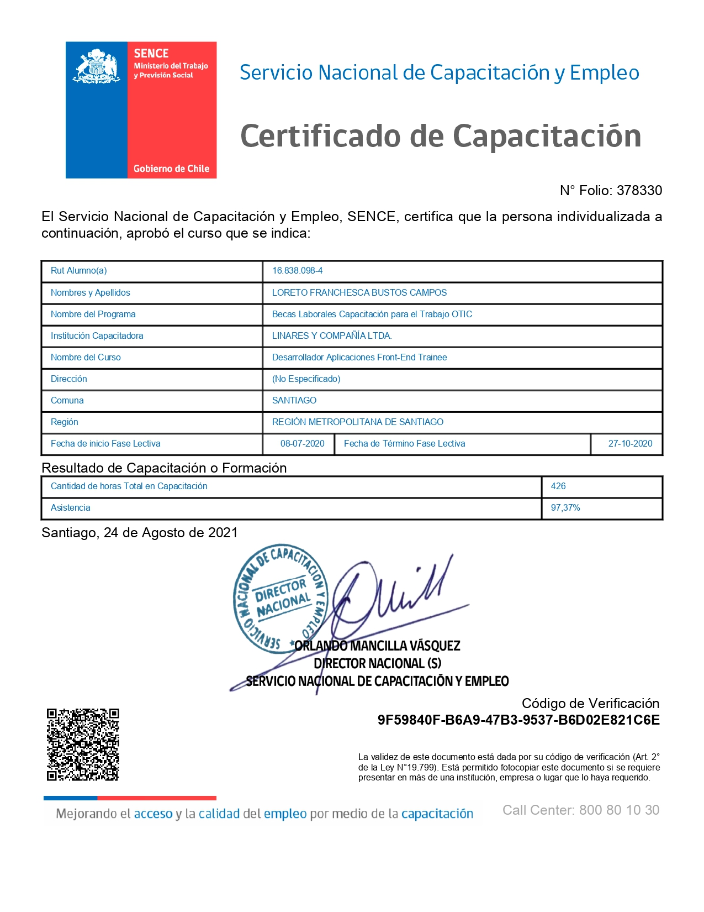
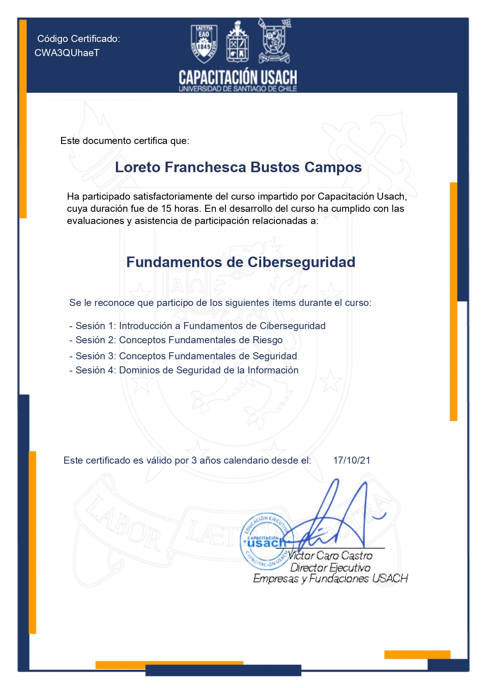
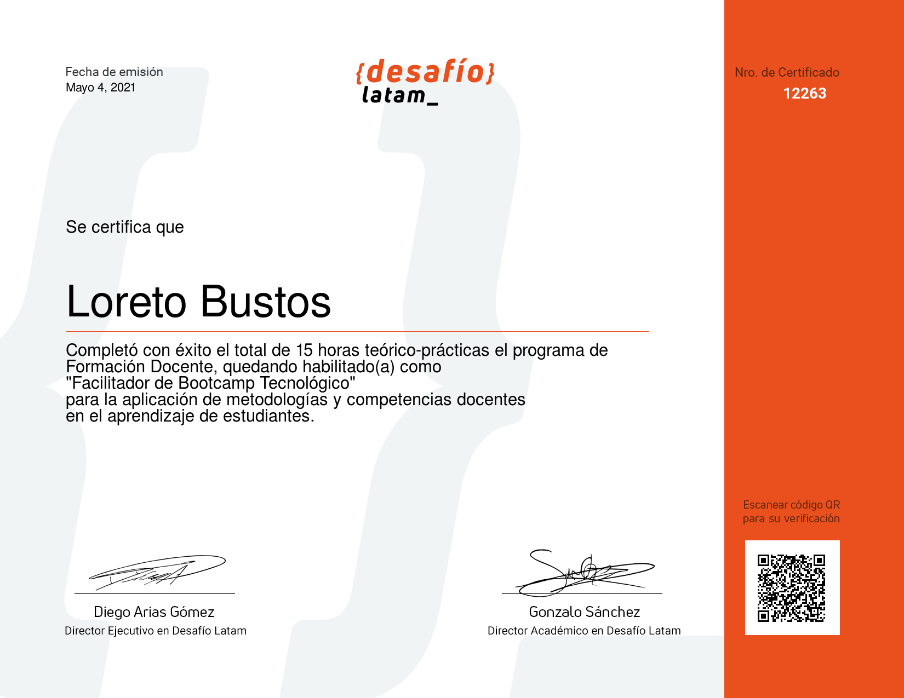

Certificados

_page-0001.jpg)



_page-0001,,,,,.jpg)

.jpg)


Como Técnico en Enfermería con más de 10 años de experiencia en el área de salud, la llegada de la pandemia representó un momento crucial en mi vida. Buscando nuevas oportunidades y desafiándome a mí mismo, decidí reinventarme y estudiar para convertirme en Desarrollador Front-end y Full Stack JavaScript. Este cambio ha sido un gran desafío, pero también ha estado lleno de oportunidades maravillosas. A medida que me sumerjo en el mundo de la programación, descubro nuevas perspectivas, creatividad y un enfoque lógico que complementa mi experiencia en el cuidado de la salud. Mi pasión por la programación ha crecido exponencialmente y estoy decidido a continuar perfeccionándome en este hermoso camino. Deseo adquirir más conocimientos, dominar nuevas tecnologías y contribuir con soluciones innovadoras en el ámbito de la salud. Estoy emocionado por las posibilidades que la programación ofrece y estoy comprometido a seguir aprendiendo y creciendo en este campo. Mi objetivo es fusionar mis habilidades en enfermería con la programación para crear aplicaciones y herramientas que mejoren la experiencia y calidad de vida de las personas. El camino de la programación me ha brindado retos constantes y satisfacciones inmensas. Estoy listo para seguir avanzando, superando obstáculos y haciendo una diferencia en el mundo a través de la combinación única de mis habilidades en enfermería y mi pasión por la programación.
Last updated 3 mins ago
Durante mi educación básica, tuve el privilegio de asistir al Colegio de Mujeres, desde Kinder hasta 8° Básico, donde recibí una educación integral y enriquecedora. adquirí conocimientos en áreas clave como matemáticas, lenguaje, ciencias, historia y educación física, sino que también desarrollé habilidades de pensamiento crítico, trabajo en equipo y liderazgo. La educación en un entorno exclusivamente femenino me permitió entender la importancia de la igualdad de género y el papel fundamental de las mujeres en todos los ámbitos de la sociedad. Valoré la oportunidad de compartir experiencias y formar parte de una comunidad que promovía la solidaridad, el respeto y la sororidad. Egresar del Colegio de Mujeres en el año 2002 me ha dejado una profunda apreciación por el potencial y el talento de las mujeres, así como la convicción de que somos capaces de alcanzar cualquier meta que nos propongamos.
Durante estos cuatro años, adquirí una formación académica sólida y desarrollé habilidades específicas en el ámbito empresarial. Mi plan de estudios incluyó asignaturas clave relacionadas con la administración, contabilidad, economía, marketing y gestión empresarial. A través de clases teóricas y prácticas, pude comprender los fundamentos y las estrategias necesarias para gestionar eficientemente una empresa.Además de la formación técnica, también recibí una educación integral que abarcó asignaturas como matemáticas, lenguaje, ciencias sociales e inglés. Estas materias complementaron mi formación y contribuyeron a mi desarrollo académico en general. Egresar del Liceo Técnico Profesional en la especialidad de Administración de Empresas en el año 2006 fue un hito importante en mi trayectoria educativa. Esta etapa me proporcionó las bases y los conocimientos necesarios para continuar mi formación en el campo de los negocios y la gestión empresarial.
.png)
.png)
.png)
Experiencia como Docente y Tutor en Desafío Latam:
Experiencia como Tutor en Edutecno:

Experiencia como Key Account Manager en Echnovation, encargada de Colegios Comeduc y Duoc UC Maipú, en el programa Technovation Girl Chile.